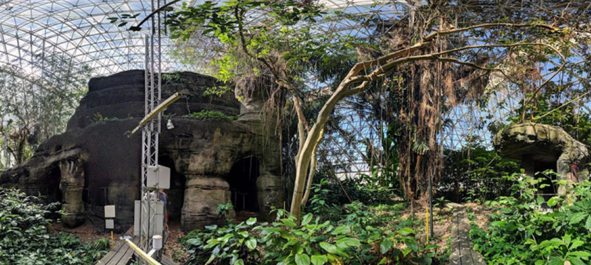

Biosphere 2 Ecosystems
Biosphere 2 contains five synthetic ecosystems encased in a glass and metal spaceframe, including the world’s largest controlled systems of tropical rain forest, desert, savanna, mangrove, and ocean.

Tropical Rainforest
Modeled principally on the Amazon Basin, focusing on plant, water, and gas interactions.

Ocean Reef Lab
The world’s largest enclosed marine mesocosm dedicated to coral reef resilience.

Landscape Evolution (LEO)
A macrocosm experiment for controlled study of water, rock, microbes, and plants.

Coastal Fog Desert
Simulates an arid desert scrub ecosystem in a coastal climate with erratic winter rainfall.

Mangroves
Comprised of marshes and forested swamps dominated by mangrove trees.

Savanna
Designed as a hydrological transition zone between the desert and rainforest.
Integrated Earth Systems
These meso-scale ecosystems allow scientists to conduct experiments at a scale not possible in the laboratory, but with a level of control not possible in the field.
